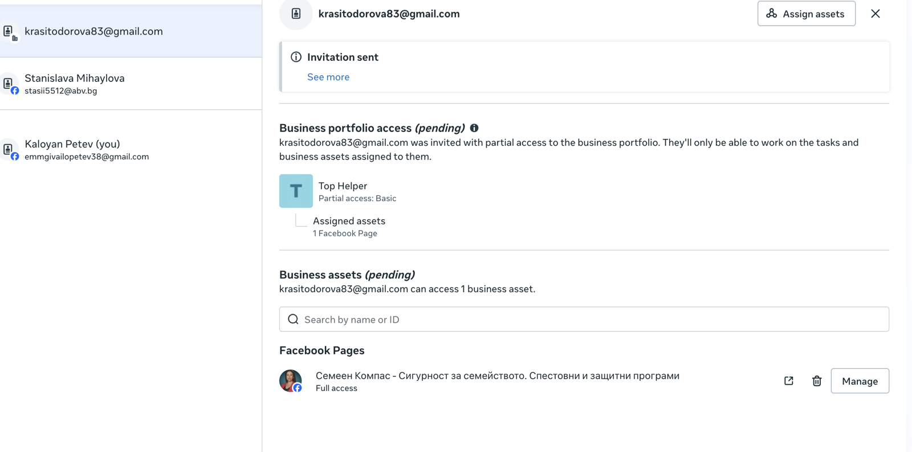
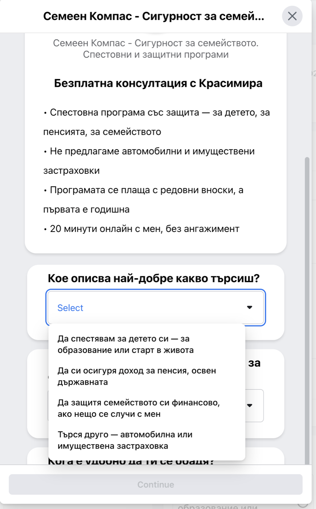

Къде е поканата
Отива на krasitodorova83@gmail.com — писмо от Facebook, подателят е notification@facebookmail.com, а заглавието е „Action required: You've been invited to join the Top Helper business portfolio“ (ако Facebook ти е на български: „Изисква се действие: Поканени сте да се присъедините към бизнес портфолиото Top Helper“).

Така изглежда поканата от моята страна: пратена е, чака теб, и носи пълен достъп до страницата „Семеен Компас“.
Важно: в писмото ще видиш името Kaloyan Petev. Това съм аз — Facebook профилът ми е с това име, а имейлът до него е моят: emmgivailopetev38@gmail.com. Не е чужд човек и не е измама.
Приемаш я така
- Отвори писмото. Ако не е във „Входящи“, виж в раздел Промоции и в Спам. Най-бързо: в търсачката на Gmail напиши Top Helper и натисни Enter.
- В писмото натисни синия бутон „Log in to accept invitation“ („Влез, за да приемеш поканата“).
- Избери Log in with Facebook и влез със своя профил — същият, който ползваш всеки ден.
- Ще те попита име и фамилия, както да се виждат: напиши Красимира Тодорова и Continue.
- Показва ти какво получаваш → Continue.
- Накрая Accept invitation. Готово — влизаш направо в Meta Business Suite.
Ако писмото го няма никъде: влез във Facebook (най-лесно от компютър) и отвори business.facebook.com — поканата стои и там и се приема със същите два бутона. Ако и там я няма, звънни ми и я пращам още веднъж, докато сме на телефона.
Какво получаваш
Пълен достъп до страницата „Семеен Компас“ — публикации, съобщения, коментари и Центъра със заявките, където влизат хората от рекламите. Виждаш всичко и от телефона, през приложението Meta Business Suite.
Достъпът е само до твоята страница — нищо друго от портфолиото не се отваря за теб, и това е нарочно.
Отвори Business SuiteФормата е поправена
Права си — здравното покритие е част от твоите програми, а в стария текст стоеше в списъка на това, което не предлагаме. Махнах го. Сега формата казва: „Не предлагаме автомобилни и имуществени застраховки“, а опцията за хората, които търсят друго, е „Търся друго — автомобилна или имуществена застраховка“.

Точно това виждат хората, преди да оставят телефона си.
Смених я и в петте реклами. Facebook ги преглежда за няколко часа и те тръгват отново. Ден-два заявките може да са малко по-малко на брой, докато системата свикне с новата форма — затова пък влизат хора, които наистина търсят твоите програми.